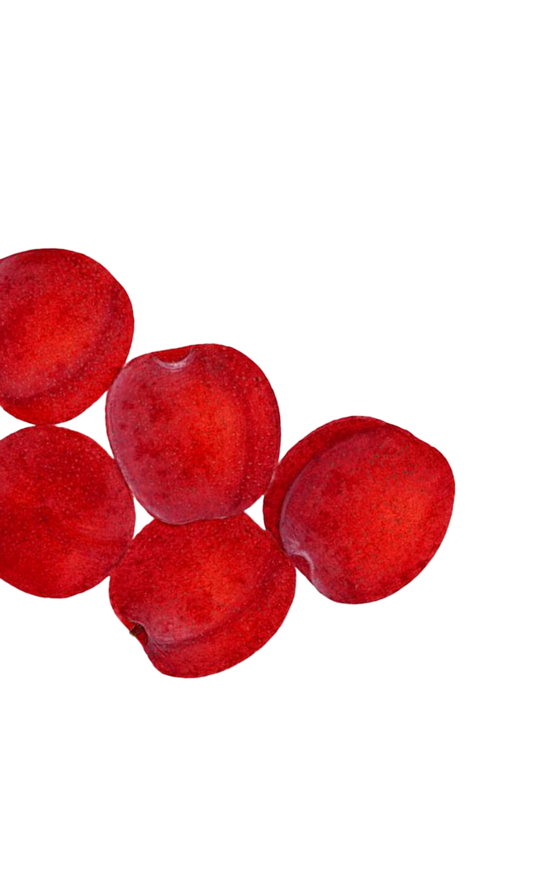
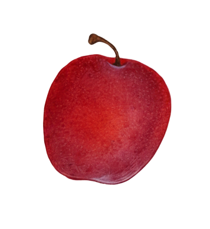
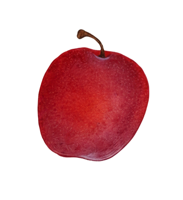
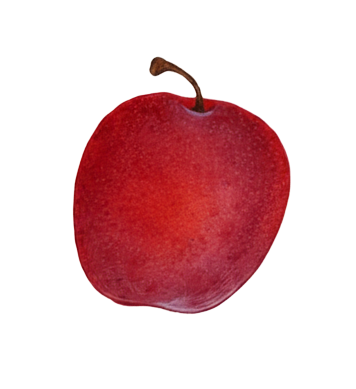
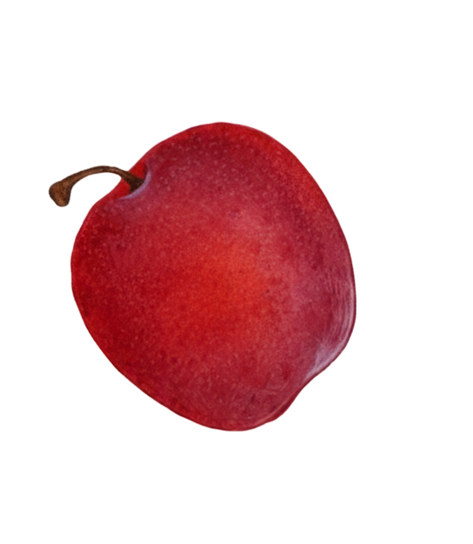
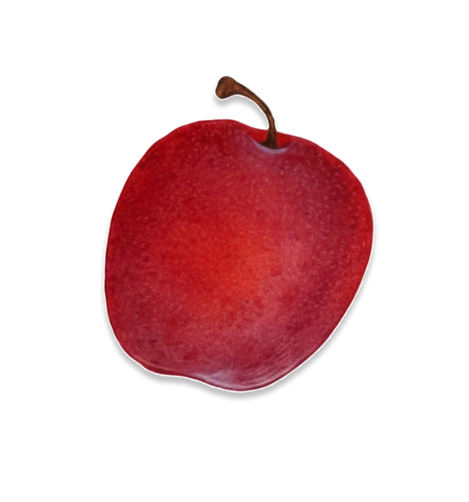
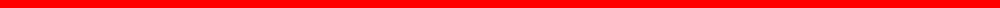

“빨간 열매는 귀해. 많이 모아서 동굴에 숨겨 놓을거야!”
 

옛날, 숲 속에는 여우들이 모여 사는 마을이 있었어요. 그 숲에는 빨간 열매가 아주 귀하게 열리기 때문에 누구나 봄이 오면 붉은 열매를 찾아 여기저기 뛰어 다녔어요.
그중에서도 가장 부지런한 여우가 있었어요. 그 여우는 아침 일찍 일어나 남들보다 먼저 열매를 따러 갔어요.

여우는 하루 종일 뛰어다니며 열매를 모았어요. 작은 굴 속에는 반짝이는 붉은 열매가 점점 쌓였죠 밤이 되면 여우는 그 열매들을 바라보며 뿌듯해했어요.
 하지만 이상했어요.다른 여우들은 맛있어서 꿀떡 꿀떡 삼키는 열매를 먹어보면 너무 써서 한입도 삼키기 힘들었거든요.
그러던 어느 날, 여우는 우연히 다른 숲에 놀러 갔어요.
그곳에는 빨간 열매가 주렁주렁 열려 있었어요.
하지만 놀랍게도, 아무도 따지 않았어요!
대신 그 숲의 여우들은 자신의 동굴 앞에 잔뜩
열려 있었던 파란 열매를 소중히 아꼈어요.
여우는 물었어요
“빨간 열매가 이렇게 많은데, 왜 아무도 안 따요?”
그 숲의 여우가 웃으며 대답했어요.
“그건 너무 써서 아무도 안 먹어.
우린 파란 열매가 제일 맛있다고 생각해.”
그제야 여우는 알게 되었어요. 빨간 열매가 귀한 이유는,
모두가 그렇게 믿었기 때문이라는 걸요.
그날 이후 여우는 열매를 모으지 않았어요.
대신 천천히 주변을 돌아다니며 직접 맛을 보았죠.
달콤한 열매, 시큼한 열매, 향긋한 열매…
그중에서 여우가 가장 좋아한 건, 작은 노란 열매였어요.
그 뒤로 여우는 남의 눈이 아닌 자기 마음으로 숲을 바라보며 살았답니다.
작품 설명 – 「빨간 열매를 모으는 여우」
이 동화는 남이 정한 기준이 아닌, 스스로 선택한 삶을 살자는 메시지를 담고 있다. 우리 사회는 모두가 비슷한 욕망을 품도록 만들어져 있다. 성적, 부, 외모, 권력 같은 것들이 행복의 조건처럼 여겨지지만, 그것은 사회가 만들어 놓은 기준일 뿐이다.
주인공 여우는 숲에서 ‘빨간 열매’를 성공의 상징으로 믿고 끊임없이 모은다. 그러나 다른 숲에 가서 그 열매가 아무 가치도 없다는 사실을 알게 되면서, 세상의 기준이 절대적이지 않다는 걸 깨닫는다.
여우의 이야기는 결국 타인의 기준이 아닌 나만의 기준으로 살아가는 용기를 말한다. 진짜 행복은 남의 시선이 아니라, 스스로의 선택에서 비롯된다.
Seoul National Univ. of Science & Tech, Visual Design kimJooHee | Email: zoe0414@naver.com | Instagram: juhyi_06
